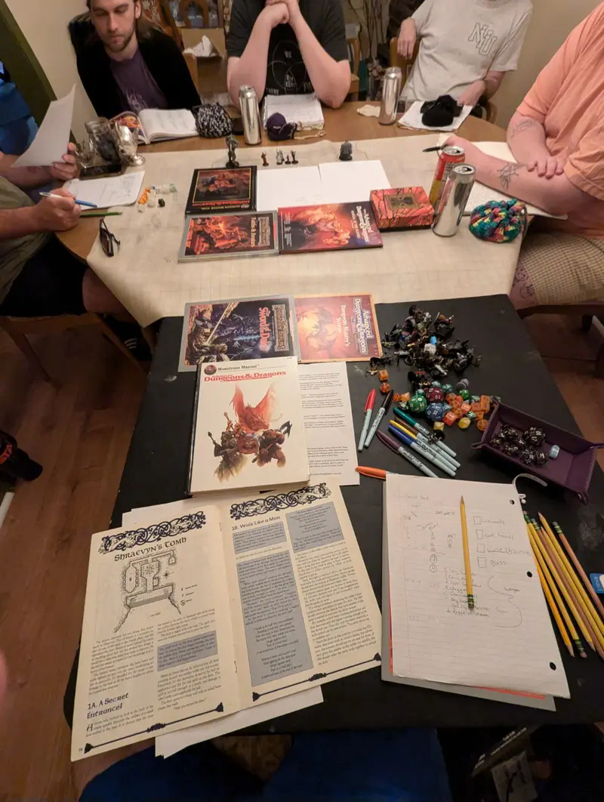

Find a beginner-friendly table
Browse games marked Beginner friendly. Open seats are listed first. A one-shot or short adventure can be a comfortable place to begin.
New Player Gateway
Game Master Society makes it easy to try your first tabletop roleplaying game in central Connecticut. At beginner-friendly tables, no experience, books, dice, or prepared character are required unless the listing says otherwise. Rules are explained as you play.
Coming on your own is normal. You do not need to know anyone or act in character to start playing.

Whether you have only watched games online, are returning after years away, or are simply curious, you are welcome to ask questions. Look for a listing marked Beginner friendly. The Game Master can explain what to expect before you commit to a seat.
Browse games marked Beginner friendly. Open seats are listed first. A one-shot or short adventure can be a comfortable place to begin.
Check the story, system, tone, location, price, schedule, age range, and any content notes provided by the GM. Ask about missing details.
Open the game’s Discord channel and ask if there is a seat. If you are not sure which game to choose, join the GMS Discord and say you are new.
The GM will explain how payment, cancellations, arrival, and any materials work. A message in Discord does not automatically reserve a seat. Review the community standards before the session.
Think about whether you want roleplay, combat, horror, mystery, exploration, comedy, or tactical play. Consider whether you prefer a one-shot, a short adventure, or a longer campaign. The best first game is one that makes you excited to sit down and participate.
For beginner-friendly games, you generally only need to bring yourself and arrive ready to learn and collaborate. Check the individual listing in case the GM asks players to bring anything specific. You do not need to memorize rules or perform a character voice.
Tickets are usually handled directly by the Game Master running the session unless the event listing says otherwise. Visit the game’s Discord channel for current availability, pricing, payment, refund expectations, and other details.
If you enjoyed it, ask in Discord about the next one-shot, a short starter campaign, or a continuing table. You can also try a different game system. We want players to know how to find a second game, not just their first.